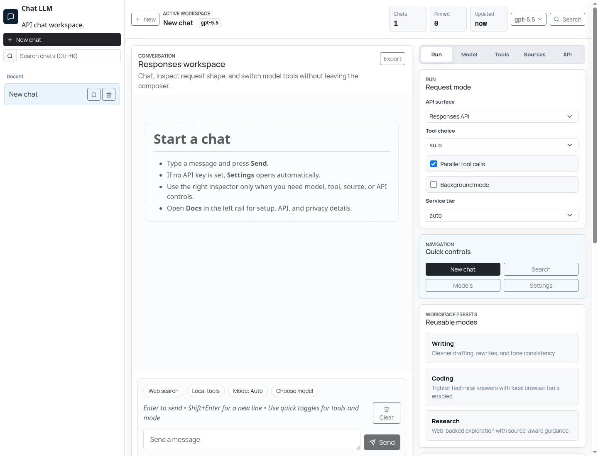

Focused app page
The actual chat workspace lives at app.html, with chat history, composer, model picker, and run inspector in one operational surface.
Chat LLM is a static browser application for talking to LLMs through the OpenAI API. It keeps the chat interface focused while separate documentation explains setup, API support, and privacy tradeoffs.

Why It Exists
The actual chat workspace lives at app.html, with chat history, composer, model picker, and run inspector in one operational surface.
Setup, API behavior, and privacy constraints are plain static HTML pages so search engines can understand the application.
The app runs on GitHub Pages and calls the OpenAI API directly from the browser, with a clear recommendation to use a proxy for production multi-user deployments.
Capabilities